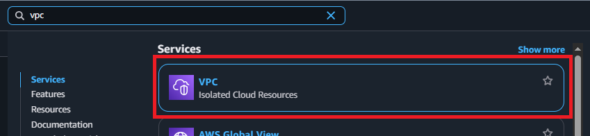

VPC and Network Setup
Overview
In this section, you’ll create the network foundation for your serverless backend. You’ll set up a Virtual Private Cloud (VPC) with private subnets to securely host your RDS database and Lambda functions, ensuring your data layer is isolated from direct internet access.
What you’ll accomplish:
- Understand VPC architecture for serverless applications
- Create a custom VPC with proper CIDR configuration
- Set up private subnets in different availability zones
- Configure security groups for database access
- Establish internet connectivity for Lambda functions
- Prepare network infrastructure for RDS and Lambda deployment
Estimated time: 30 minutes
Why VPC for Serverless Backend?
Security Benefits
Private Subnets:
- Database not accessible from internet
- Lambda functions communicate privately with RDS
- Additional layer of defense against attacks
Network Isolation:
- Separate your database from public internet
- Control traffic flow with security groups
- Meet compliance requirements for data protection
Architecture Pattern
Internet
↓
NAT Gateway (for Lambda outbound)
↓
Private Subnet (Lambda Functions)
↓
Private Subnet (RDS Database)
└── Isolated, no direct internet access
Lambda and VPC:
By default, Lambda functions run in an AWS-managed VPC with internet access. When you attach Lambda to your custom VPC:
Lambda can access resources in private subnets (like RDS)
Lambda loses direct internet access by default
Required for connecting to databases in VPC
Understanding the Network Architecture
What We’ll Build
VPC (10.0.0.0/16)
├── Private Subnet 1 (10.0.128.0/20) - AZ: ap-southeast-1a
│ └── For Lambda Functions
│
├── Private Subnet 2 (10.0.144.0/20) - AZ: ap-southeast-1b
│ └── No use for this subnet
│
├── Private Subnet 3 (10.0.160.0/20) - AZ: ap-southeast-1a
│ └── For RDS Database (multi-AZ requirement)
│
├── Private Subnet 4 (10.0.176.0/20) - AZ: ap-southeast-1b
│ └── For RDS Database (multi-AZ requirement)
Why 4 subnets across 2 Availability Zones?
Private Subnet 1 is preserved for a Lambda function
Private Subnet 3 and Private Subnet 4 is preserved for an RDS instance.
It is required that your VPC must have at least two subnets. These subnets must be in two different Availability Zones in the AWS Region where you want to deploy your DB instance. This ensures high availability and allows RDS to create a Multi-AZ deployment or automatic failover setup.
We won’t use Private Subnet 2
Step 1: Create VPC
1.1 Navigate to VPC Console
- Log in to AWS Management Console
- In the search bar, type “VPC”
- Click on VPC under Services

1.2 Create VPC
- Click Create VPC
VPC settings: Select VPC and more
Name tag: workshop-backend
IPv4 CIDR block: 10.0.0.0/16
IPv6 CIDR block: No IPv6 CIDR block
Tenancy: Default
Number of Availability Zones (AZs): 2
Number of public subnets: 0
Number of private subnets: 4
NAT gateways ($) - updated: None
VPC Endpoints: None

- Verify your VPC structure under the Preview

-
Click Create VPC
-
Wait a few seconds for the system to initialize your VPC. When finished, click View VPC

- You will be redirected to your new VPC console

Step 2: Create Security Groups
Security groups act as virtual firewalls controlling inbound and outbound traffic.
2.1 Create Security Group for VPC endpoint
This security group is for a VPC endpoint required for our Lambda to access to Secrets Manager to fetch RDS secret. We will set up the endpoint in 5.2.4 AWS Secrets Manager Configuration
- In the VPC console left navigation, click Security Groups
- Click Create security group
Security group name: workshop-endpoint-sm-sg
Description: Security group for Secret Manager endpoint
VPC: Select workshop-backend-vpc
Inbound rules:
- Click Add rule
- Type: HTTPS
- Protocol: TCP
- Port range: 443
- Source: Custom
- Source: type in our VPC’s CIDR
10.0.0.0/16
Outbound rules:
- Keep default: All traffic (0.0.0.0/0) allowed
- Click Create security group
2.1 Create Security Group for Lambda
- In the VPC console left navigation, click Security Groups
- Click Create security group
Security group name: workshop-lambda-sg
Description: Security group for Lambda functions
VPC: Select workshop-backend-vpc
Inbound rules:
- Click Add rule
- Type: HTTPS
- Protocol: TCP
- Port range: 443
- Source: Custom
- Source: Select the endpoint security group:
workshop-endpoint-sm-sg
Outbound rules:
- Keep default: All traffic (0.0.0.0/0) allowed
- This allows Lambda to:
- Connect to RDS
- Call AWS services (Secrets Manager, CloudWatch)
- Click Create security group

6.2 Create Security Group for RDS
- Click Create security group
Security group name: workshop-rds-sg
Description: Security group for RDS database
VPC: Select workshop-backend-vpc
Inbound rules:
- Click Add rule
- Type: PostgreSQL
- Protocol: TCP
- Port range: 5432 (auto-filled)
- Source: Custom
- Source: Select the Lambda security group:
workshop-lambda-sg- Start typing “workshop” to filter
- Select the SG ID (sg-xxxxxxxxxxxxx)
What this does: Only allows PostgreSQL connections (port 5432) from resources that have the Lambda security group attached.
Outbound rules:
- Keep default: All traffic allowed (for database maintenance)
- Click Create security group

Security Group Best Practice:
We’re using security group references instead of IP addresses:
More flexible (no need to update if Lambda IP changes)
More secure (only Lambda with the correct SG can access)
Easier to manage (add more Lambda functions without updating rules)
Step 3: Verify Network Configuration
Verify you have:
- VPC created with 10.0.0.0/16 CIDR
- 4 private subnets created:
- Private subnet 1 (10.0.128.0/20) in ap-southeast-1a
- Private subnet 2 (10.0.144.0/20) in ap-southeast-1b
- Private subnet 3 (10.0.160.0/20) in ap-southeast-1a
- Private subnet 4 (10.0.176.0/20) in ap-southeast-1b
- Lambda security group created (outbound all traffic)
- RDS security group created (inbound PostgreSQL from Lambda SG)
Summary
Congratulations! You’ve successfully:
- Created a custom VPC with 4 private subnets with proper CIDR configuration
- Set up security groups for Lambda and RDS with proper rules
- Established secure network foundation for serverless backend
Next Steps
Proceed to Part 2: RDS Database Setup to create your PostgreSQL database within this secure VPC infrastructure.
Ready to continue? Your network foundation is now ready to host secure database and serverless compute resources! 🎉